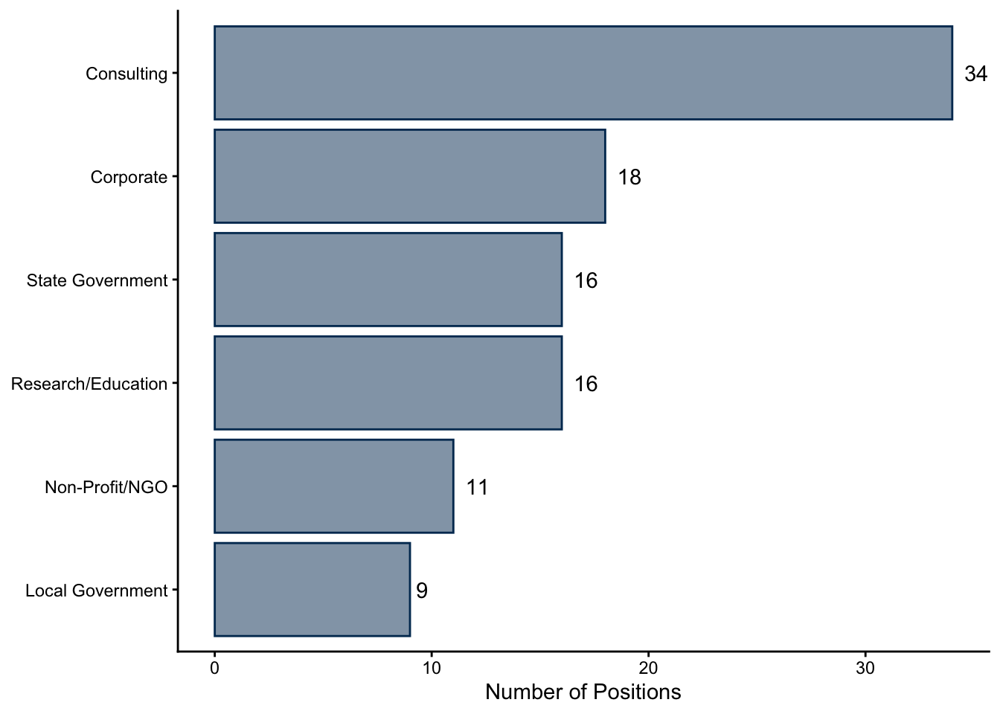
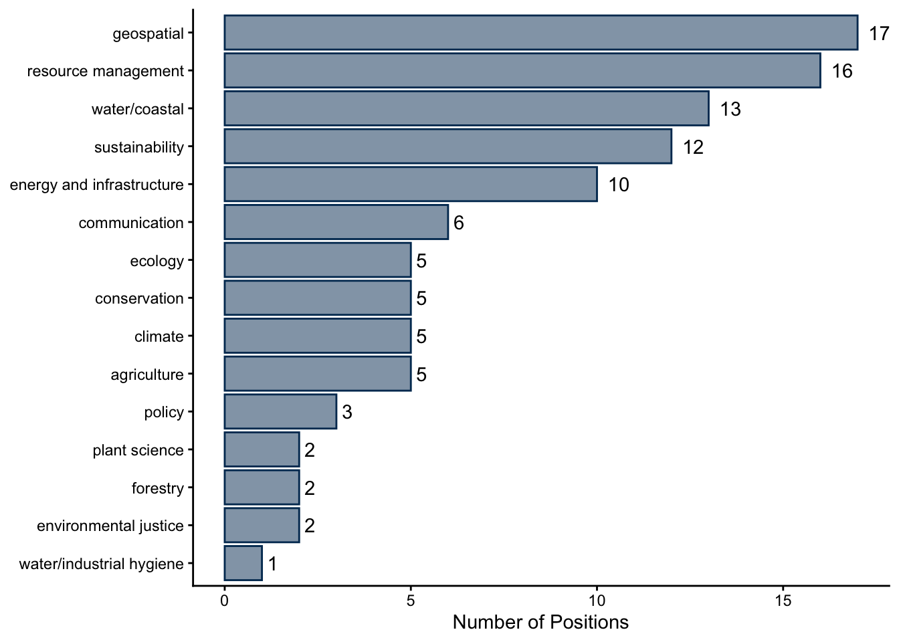
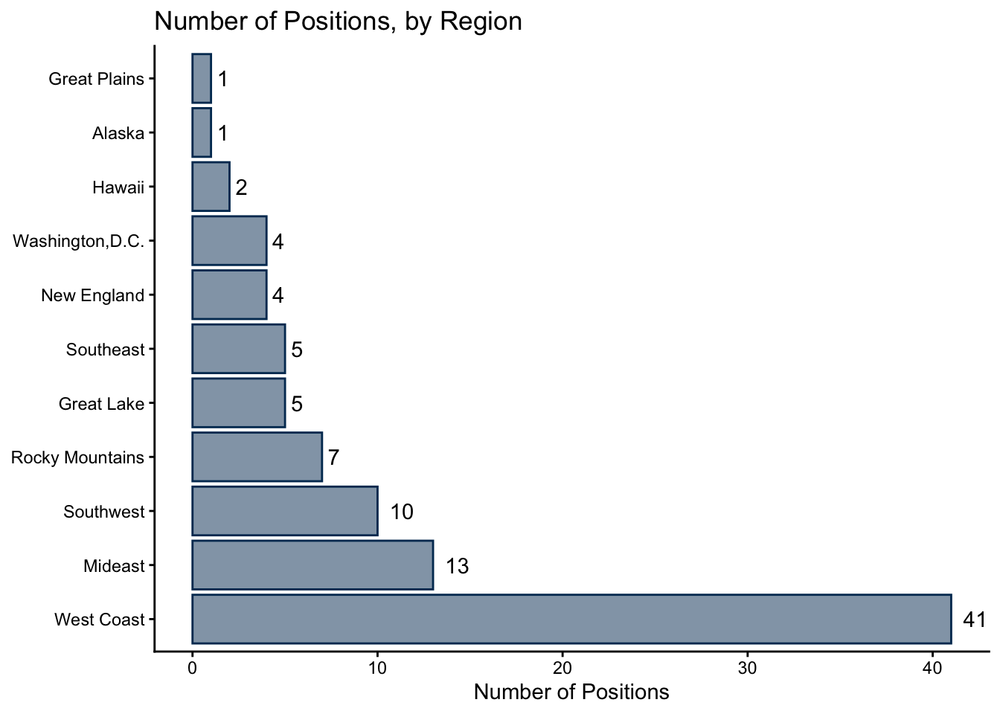
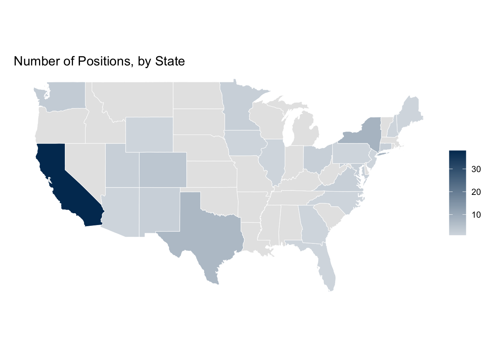
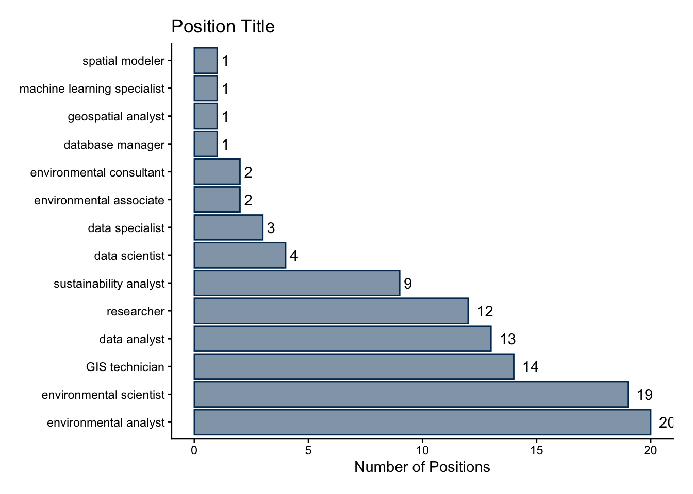
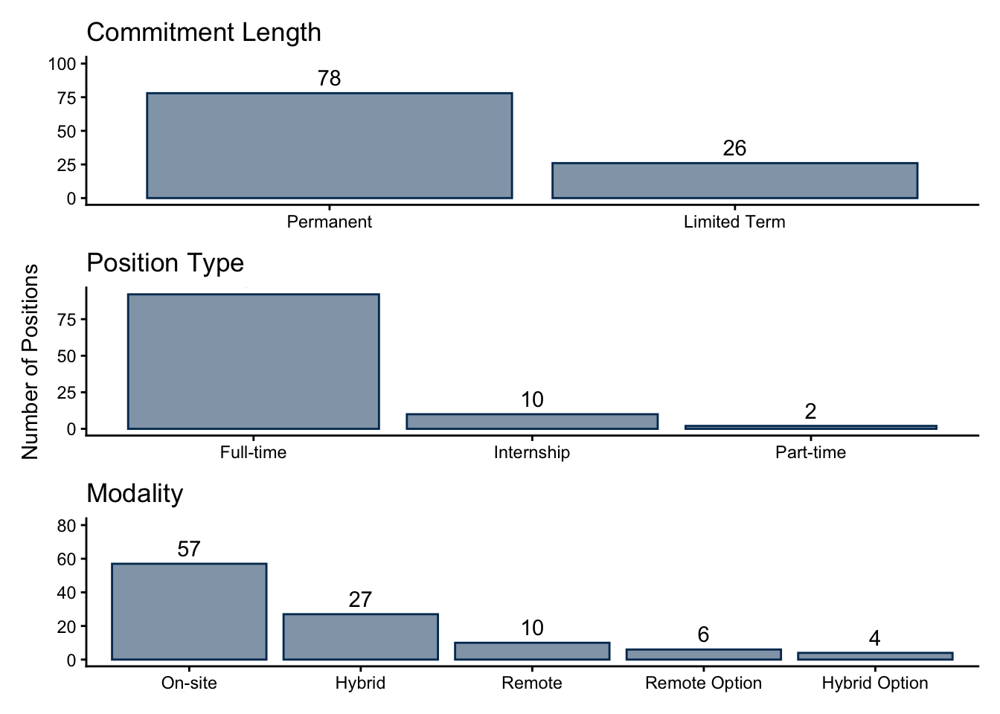
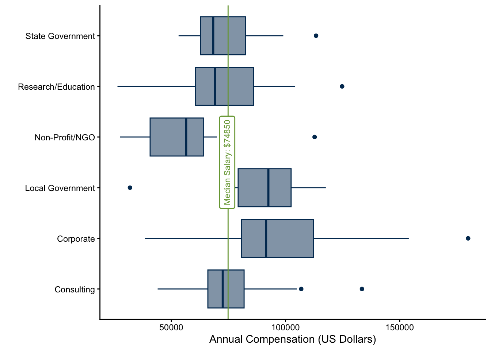
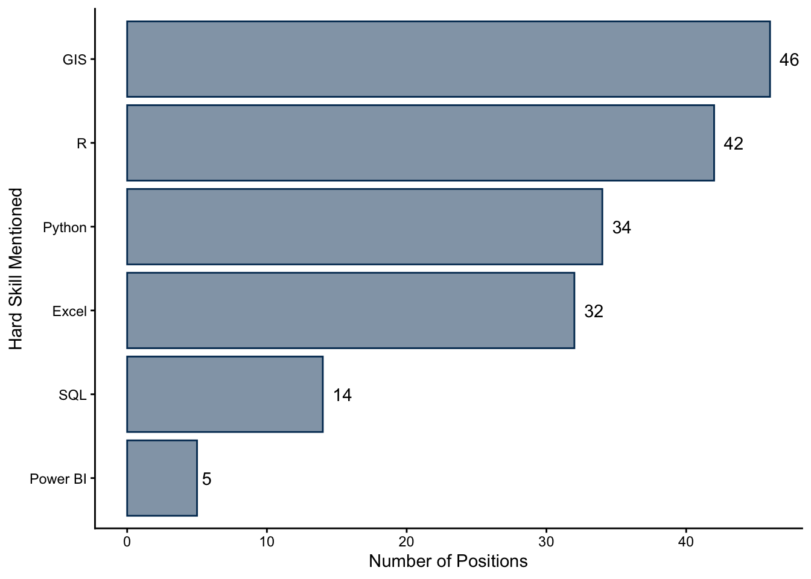

EDS Job Market Report: Fall
Data from October 28, 2025 through January 3, 2026
The following report contains statistics and visualizations summarizing the job openings being posted to online services such as Indeed, Conservation Job Board, CalCareers, and others. Keywords such “environmental data science”, “environmental analyst”, and “climate analyst” (just to name a few, though a wide range were used) were searched for, and roles pertaining to environmental data analysis, planning, or communication were pulled and re-posted on the BrenConnect website. These posts are what make up the data used in the following report, and examples of positions are included throughout.
MEDS 2026 Cohort
The Master of Environmental Data Science (MEDS) program at the Bren School teaches data techniques such as statistical modeling, machine learning, and data visualization. Core skills include R, Python, SQL and version control in GitHub, and therefore students typically aim for jobs that utilize these programming languages and practices. Students are also interested in positions that involve GIS/geospatial methods.
Although most, if not all, positions that exemplified the skills taught in the MEDS program were posted, the job search was somewhat customized to the preferences of the current cohort. This was likely most influential when considering the location of the position, as the current class is particularly interested in California, the West Coast of the United States, Texas, and large cities such as New York City and Washington, D.C, with some international interest as well. Some students are also partial to remote positions.
These factors guide the job openings posted on BrenConnect, and therefore the results presented in this report. In total, there are 104 positions included in the dataset, collected between October 2025 and January 2026.
Sample Position Descriptions
Employer Information
Sector and Environmental Field
The majority (33%) of the positions found were in the consulting sector. Following consulting:
Corporate: 17%
Research/Education: 16%
State Government: 16%
Non-profit/NGOs: 11%
Local Government: 9%
Along with variety in sectors, roles reflected a wide range of environmental niches. The top three pertained to geospatial work (16% of all positions), resource management (15%), or those focused water/coastal resources (12.5%). It should be noted that most consulting positions, unless a specific environment was listed, were categorized under resource management.

Location
As mentioned, the preference of MEDS 2026 cohort had a big influence on which positions were reposted to BrenConnect, and therefore exist in this dataset. Primarily, there is a very large bias for roles located in California.

It is important to mention that although the “West Coast” theoretically represents California, Oregon, and Washington, this data is made up of 38 jobs located in California and only 3 in Washington.

There were a total of 4 international positions posted, in India, Sweden, Canada, and the UK. There was also one role in Puerto Rico.
Position Details

Overall, the majority of jobs were permanent, full-time, and on-site positions. Jobs were classified as “limited term” if they listed specific durations, such as “one-year placement”.

The median compensation of all salaried positions (meaning, excluding part-time work and internships) is 74,850 US dollars. The breakdown by sector can be seen below.

It appears that positions in the local government and corporate have a median greater than that of the all-positions median. The corporate sector also has the highest outliers in the dataset, with salaries ranging all the way up to $180,000. The non-profit/NGO sector offers the smallest compensation.
It should be mentioned that not all positions in the dataset are salaried position: if they contained hourly or monthly compensation information, annual compensation was approximated (assuming a 37.5-hour work week). Part-time and internship positions are excluded from these figures.
Skills and Qualifications
GIS, R, and Python are the primary data analysis skills that employers are looking for. Many positions also specify MS Office tools such as Power BI and Excel.

It was common for positions to not list a specific coding language, but instead use terms such as “data analysis” or “spatial analysis” to convey their qualifications.
Conclusion
104 environmental data science positions were retrieved from online job boards between October 28, 2025 through January 3, 2026. They covered roles in all sectors and a wide range of environmental focuses, and varied in salary, modality, commitment length, and position type. The most popular data analysis qualifications were proficiency in GIS and R.